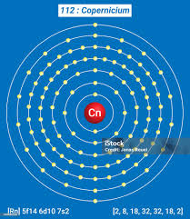

Research
- üî¨ Lithium: Jadarite Mineral for EV Batteries
“Jadarite’s unique recipe” by Francesco Putzolu et al., published in Nature Geoscience (2025). This paper examines the precise geological conditions required to form jadarite—a lithium-rich mineral in Serbia that could supply ≈ 90% of Europe’s electric vehicle lithium needs.
Follow link 1 Follow link 2 - üî¨ Magnesium Alloys: Biomedical Uses
“Mechanism and application prospect of magnesium‑based materials in clinical applications”, ScienceDirect (2025). Overviews Mg-alloys used in bone fixation, stents, drug delivery, and tumor therapy.
Follow link 1
Key Characteristics
Li
- Lightest metal (and lightest solid element)
- Very soft—can be cut with a knife
- Highly reactive—especially with water
- Reacts READILY with oxygen to form lithium oxide (Li₂O)
- Stored in oil to prevent reaction with air/moisture
Na
- Soft, silvery-white metal
- Very reactive—stored under oil
- Reacts explosively with water to produce hydrogen gas
- Forms sodium hydroxide (NaOH) and sodium chloride (NaCl)
- Vital for nerve impulse transmission in the human body
K
- Soft metal, even more reactive than sodium
- Violent reaction with water—flame may turn lilac
- Stored under oil to prevent oxidation
- Essential nutrient for plants and humans
- Forms potassium hydroxide (KOH) and potassium nitrate (KNO₃)
Rb
- Very soft and silvery-white metal
- Highly reactive—ignites spontaneously in air
- Explosive reaction with water, even more than potassium
- Used in research, atomic clocks, and special glasses
- Forms rubidium hydroxide (RbOH) on reaction with water
Cs
- Soft, gold-colored metal—melts just above room temperature
- Extremely reactive—can explode in water
- Used in atomic clocks (most accurate timekeeping)
- Stored in sealed ampoules to prevent contact with air
- Forms cesium hydroxide (CsOH), a strong base
Fr
- Rare and highly radioactive
- Extremely unstable—exists only in trace amounts naturally
- Highly reactive—expected to be more reactive than cesium
- Primarily used for scientific research
- Too unstable for any practical applications
Be
- Hard, brittle, and light metal
- High melting point and strong
- Toxic in powdered form—handled with care
- Forms BeO (beryllium oxide) on reaction with oxygen
- Used in aerospace materials due to stiffness
Mg
- Lightweight and silvery-white metal
- Burns with a bright white flame
- Essential element in human body (in enzymes)
- Reacts slowly with cold water
- Used in fireworks, flares, and alloys
Ca
- Soft gray metal—reactive with water
- Vital for bones, teeth, and muscle function
- Burns with a brick-red flame
- Forms calcium oxide (quicklime) when burned
- Used in cement, fertilizers, and as a reducing agent
Sr
- Soft, silvery metal—turns yellowish in air
- Burns with a bright red flame
- Reacts quickly with water and air
- Used in fireworks and signal flares
- Strontium-90 is radioactive—used in medical applications
Ba
- Soft, silvery metal—highly reactive
- Burns with a green flame
- Never found free in nature
- Barium sulfate used in X-ray imaging of the stomach (barium meal)
- Also used in drilling fluids for oil wells

Ra
- Radioactive, rare, and highly unstable
- Discovered by Marie Curie
- Glows in the dark due to radiation
- Historically used in luminous paints
- Now replaced due to safety concerns
Zn
- Essential trace element for living organisms
- Used for galvanizing iron to prevent rust
- Also used in alloys like brass (Zn + Cu)
Cd
- Soft, bluish-white metal
- Used in rechargeable NiCd batteries
- Highly toxic and environmentally hazardous
Hg
- Only metal that’s liquid at room temperature
- Used in thermometers and barometers (historically)
- Extremely toxic—especially as vapor or methyl mercury
Cn
- Synthetic, highly unstable element
- Belongs to group 12, like Zn, Cd, Hg
- No practical uses due to short half-life

Al
- Lightweight and corrosion-resistant
- Used in construction, packaging (foil), and transport
- Most abundant metal in Earth’s crust
Ga
- Melts just above room temperature
- Used in LEDs and semiconductors
- Non-toxic and expands upon solidifying
In
- Soft metal with low melting point
- Used in LCD screens and solders
- Shiny and malleable
Tl
- Soft, heavy, and highly toxic metal
- Previously used in rat poison and thermometers
- Now used in electronics and optics
Sn
- Soft, silvery-white metal
- Used to make bronze (Sn + Cu) and solder
- Prevents corrosion (tin cans)
Pb
- Dense, malleable, and soft metal
- Used in batteries (lead-acid), weights, radiation shielding
- Toxic—especially in paints and pipes
Bi
- Heavy, brittle metal with colorful oxide layer
- Used in cosmetics and medications (e.g., Pepto-Bismol)
- Non-toxic alternative to lead
Nh
- Artificially created; atomic number 113
- Unstable with very short half-life
- No known real-world applications
Fl
- Superheavy element with atomic number 114
- Highly unstable and radioactive
- Research focus: superheavy element behavior
Mc
- Discovered in 2003 by Russian–American team
- Very short half-life (milliseconds)
- No known commercial or industrial use
Lv
- Element 116, named after Lawrence Livermore Lab
- Synthetic and highly unstable
- Used only in atomic research
Real Life Uses
Li
B A T T E R Y :
A lithium-ion battery is a rechargeable battery type widely used in portable electronics and electric vehicles.
Lithium ions move from the negative electrode (anode) to the positive electrode (cathode) during discharge, and back again during charging.
This ion movement generates electrical current.
Common Uses : Smartphones, laptops, power banks; Electric vehicles (like Tesla cars); Space applications (satellites, Mars rovers)
Lithium-ion batteries revolutionized portable technology, replacing bulky lead-acid and nickel-cadmium batteries!
Na
S T R E E T L I G H T S :
Sodium vapor lamps produce a bright yellow-orange light and are widely used in street lighting and highways.
These lamps work by vaporizing sodium inside a tube which then emits visible light.
They are energy-efficient and work well in foggy conditions.
K
F E R T I L I Z E R :
Potassium compounds like potassium chloride (KCl) are crucial ingredients in fertilizers.
Potassium helps plants build strong stems, resist disease, and improve crop yield.
It is one of the **three primary macronutrients (NPK)** used in agriculture.
Rb
A T O M I C C L O C K S :
Rubidium is used in highly accurate **atomic clocks** that help synchronize GPS satellites and telecommunication networks.
Rubidium atomic clocks are smaller and less expensive than cesium ones, yet still offer excellent precision.
Cs
A T O M I C C L O C K S :
Cesium is used in the **most accurate atomic clocks**, which define the **international standard for time (SI second)**.
These clocks are so precise they would lose just **1 second in millions of years**.
Used in GPS systems, space navigation, and scientific research.
Be
A E R O S P A C E :
Beryllium is used in aerospace components due to its **high strength-to-weight ratio**, **rigidity**, and **thermal stability**.
It is used in aircraft brakes, satellites, and X-ray equipment windows.
Also used in nuclear reactors as a neutron reflector.
Mg
A L L O Y S & A U T O P A R T S :
Magnesium is widely used to make **lightweight alloys** for automotive parts, laptops, cameras, and sports equipment.
These alloys improve **fuel efficiency** and are corrosion-resistant.
Also found in fireworks and flares due to its bright white flame.
Ca
C O N S T R U C T I O N :
Calcium is a key component of **cement**, **plaster**, and **lime (CaO)**, used in construction.
Calcium carbonate (CaCO₃) is used in making chalk, glass, and in purifying iron from iron ore.
Also essential in biological systems (bones, teeth, muscles).
Sr
F I R E W O R K S :
Strontium compounds (like SrNO₃) are used to produce **bright red flames** in fireworks and flares.
Also used in glow-in-the-dark paints and old-style color TV screens.
Strontium-90, a radioactive isotope, is used in some nuclear power applications.
Ba
M E D I C A L S C A N S :
Barium sulfate (BaSO₄) is used in **barium meals**—a contrast agent in X-ray imaging of the digestive system.
It is opaque to X-rays and helps visualize the esophagus, stomach, and intestines.
Also used in drilling fluids for oil and gas wells.
Zn
G A L V A N I Z A T I O N :
Zinc is used to coat iron or steel to protect it from rusting (galvanization).
Used in: Steel bridges, rooftops, bolts, nuts, batteries, sunscreens.
Al
L I G H T W E I G H T :
Aluminium is known for its strength-to-weight ratio and corrosion resistance.
Used in: Aircrafts, packaging (foils, cans), cars, electronics, and kitchenware.
Ga
L E D S:
Gallium is used in gallium arsenide (GaAs) for high-speed and optoelectronic devices.
Used in: LEDs, solar panels, 5G chips, thermometers.
In
D I S P L A Y T E C H:
Indium tin oxide (ITO) is transparent and conductive—perfect for screens.
Used in: Smartphones, TVs, solar cells, touch panels.
Sn
S O L D E R I N G :
Tin is a key component in solder—used for joining metal parts.
Used in: Electronics, plumbing, tinplate food cans.
Pb
R A D I A T I O N P R O T E C T I O N :
Lead blocks harmful radiation and is used in medical and nuclear facilities.
Used in: X-ray shields, nuclear power plants, batteries.
Bi
M E D I C I N E S :
Bismuth subsalicylate is used in antacids and it replaces toxic lead in alloys.
Used in: Pepto-Bismol, low-melting alloys, cosmetics.